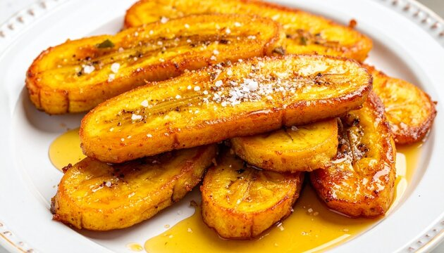

Fried Plantain

Description
Fried plantain is a popular dish made from ripe plantain fried until golden brown.
ingredients
- Ripe plantain
- Cooking oil
- salt (optional)
Steps
- Peel the plantain and cut into slices.
- Heat the cooking oil in a pan.
- Fry the slices until golden brown.
- Remove the olantain and drain excess oil.
Back to home